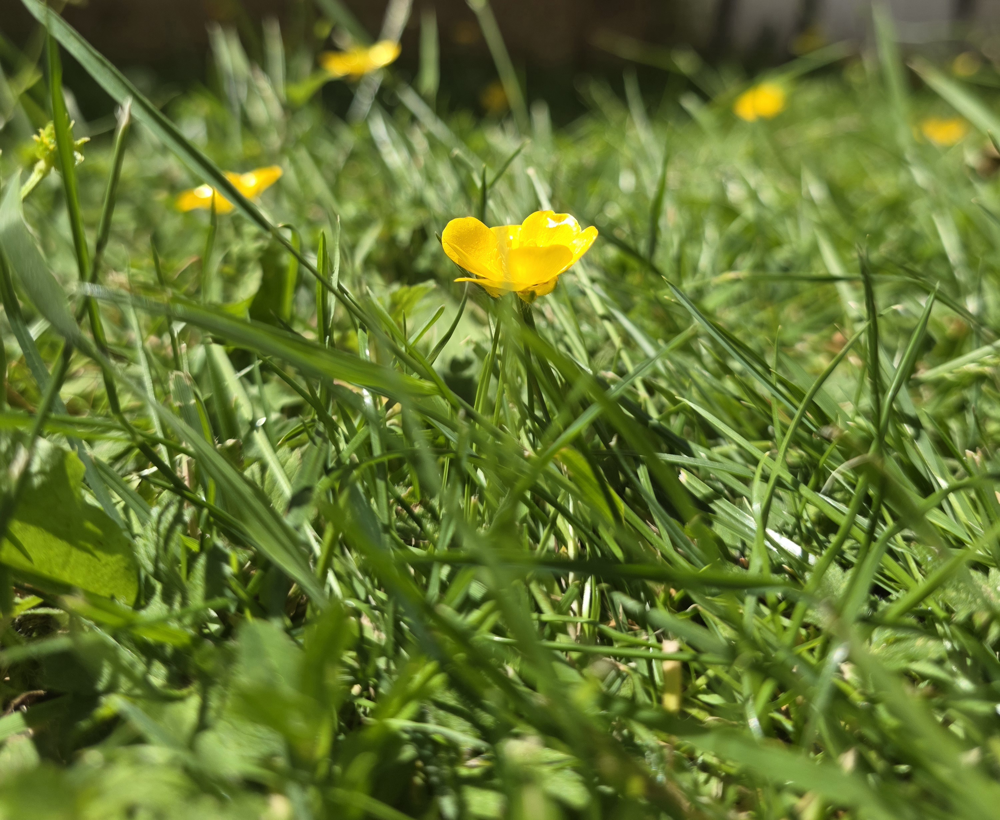

Phase 2: The Romantic Revolution Gallery
This curation tracks the collapse of cold Enlightenment empiricism, highlighting art that mirrors the explosive rise of individual imagination, inner turmoil, and political rebellion against rigid systemic constraints.

The Romantic Works Portfolio Gallery
A comprehensive visual analysis charting the foundational shift toward emotional autonomy, human agency, and raw sublime landscapes within historical documentation.
Phase 3: The Gothic & Irrational
An interrogation of folklore, supernatural dread, and the deeply fractured 'Shadow Self.' This space examines the volatile terrors that lurk just beneath the surface of civilized society and historical trauma.

Dark Currents & Folklore
Investigating the underlying mythological undercurrents, historic oral folk traditions, and psychological terrors that challenge basic empirical reason.

The Shadow Self
A closer contextual reading into internal subconscious processes, suppressed psychological anxieties, and early expressions of gothic horror elements.

Supernatural Fears
Deconstructing thematic artistic focus on the unexplainable, the irrational, and the historical hauntings anchored within classical European folklore.

Historical Hauntings
Analyzing spectral manifestations and legendary narratives that symbolize larger deep-seated structural or political crises across changing cultural eras.
Phase 4: Nature Log & Excursion

Field Observation: The Sublime in the Quiet Margins
This deliberate excursion into the local ecosystem isolates a single, vibrant bloom thriving amidst uncultivated grass. Aligned with the core tenets of Romanticism, this log serves as a defense against industrial detachment and rigid scientific categorization. By emphasizing unmediated, immediate sensory contact over cold analytical detachment, this observation records the intense, personal resonance found in the organic textures and isolated patterns of the natural world.